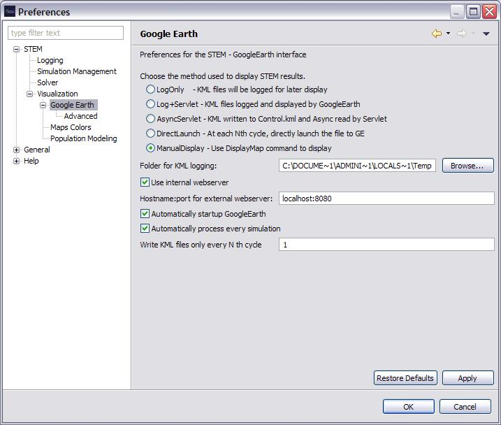

Google Earth Preferences
Specifies the preferences used by the STEM to GoogleEarth interface.
- Choose the Method used to display STEM Results
- LogOnly
With this option, the KML files
are written but not displayed by GoogleEarth.
This would be used when you are either going to display
the GoogleEarth visualization at a later time or if you are
going to run GoogleEarth from another system with the KML
files on a shared disk.
- "Log+Servlet"
With this option,
the KML files are written and then displayed by GoogleEarth.
GoogleEarth actually requests the file from a webserver
Servlet which reads the file and sends it to GoogleEarth.
- "AsyncServlet"
The KML is written on every cycle,
overlaying the file written for the previous cycle. GoogleEarth
asks for new data on a predetermined interval and is sent the
current KML. The advantage over the previous method is that
it helps keep GoogleEarth from falling too far behind the STEM processing.
- "DirectLaunch"
With this option, the KML files
are directly sent to GoogleEarth without using an intermediate
web server. This can cause problems because GoogleEarth may get
files faster than it can process them but it is more efficient.
- "ManualDisplay"
The map is generated by user
clicking the Display button. This is the default option.
- "Folder for KML logging:"This is the folder where
STEM will write the KML files that GoogleEarth will read.
If it already contains KML files, the user will be given
the oportunity to delete them, keep them or choose a new folder.
- "Use internal webserver"
This is used to cause the
webserver built into Eclipse to be used.
- "Hostname:port for external webserver"
This is the required hostname and port for an external webserver.
Normally the internal webserver would be used so this is not needed
but there are cases where one might want to use an existing web server.
- "Automatically startup GoogleEarth"
If specified then when the STEM-GoogleEarth view is started,
then the GoogleEarth application is also launched.
- "Automatically process every simulation"
if specified, then when you start any simulation running,
it will automatically have its processing be mapped to GoogleEarth.
Only one simulation will be displayed by GE since it would
be counterproductive to show 2 different views at the same time.
- "Write KML files only every N th cycle"
If the simulation does not change rapidly from cycle to cycle,
significant overhead can be saved by only sending data to
GoogleEarth every Nth cycle.
- "Chose Aspect to be Logged.cycle"
Select the disease aspect to be displayed as colored polygons
on the GoogleEarth map.
